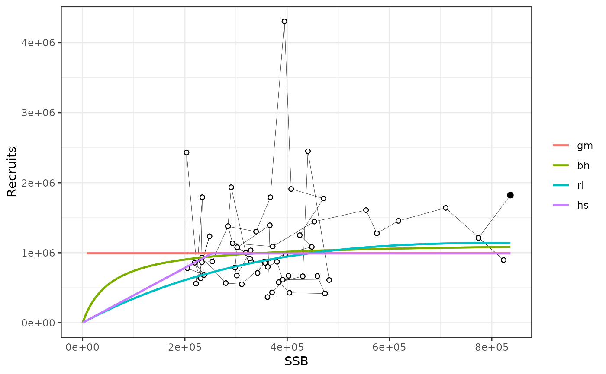
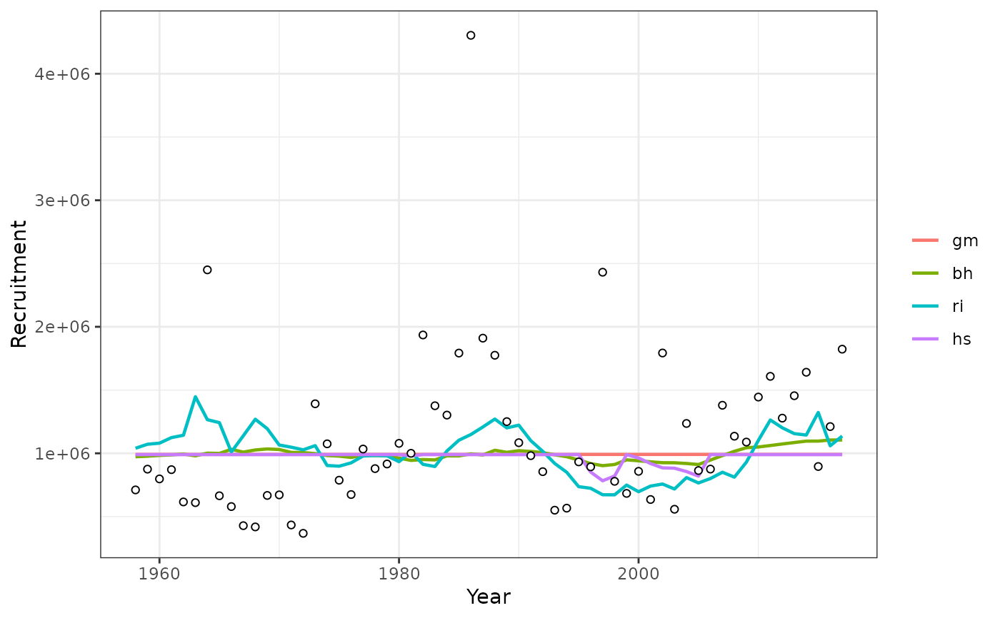
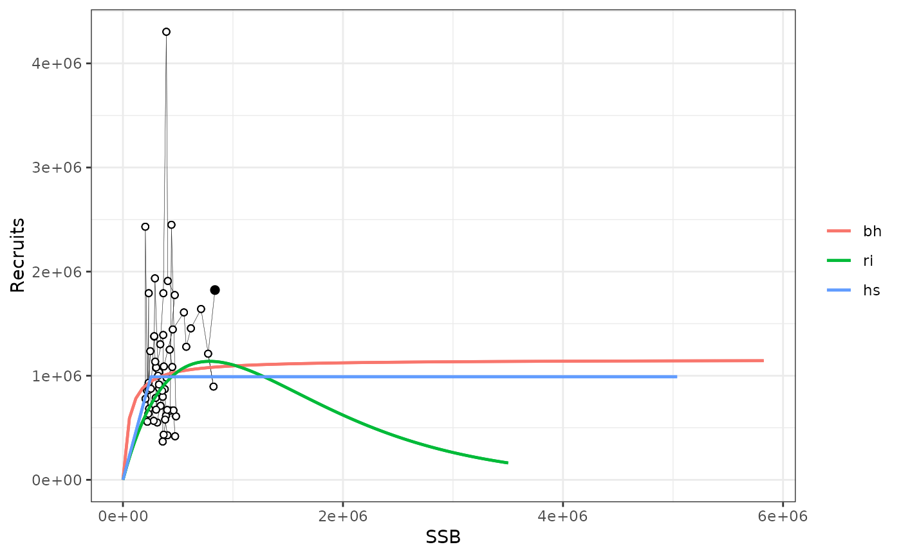
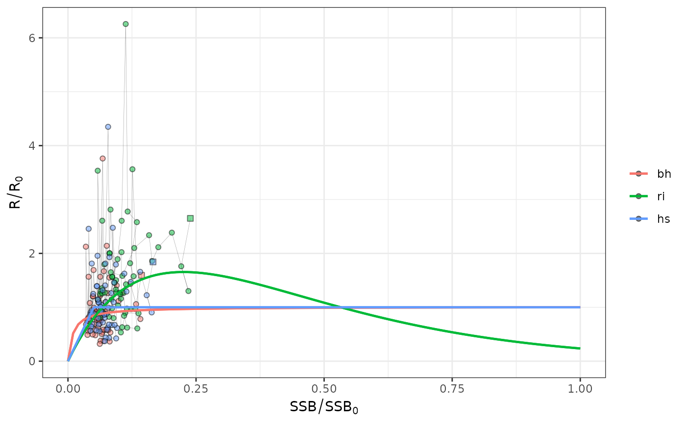

srrTMB.RdFits Stock Recruitment Relationships (SRR) in TBM
srrTMB(
object,
spr0 = "missing",
s = NULL,
s.est = TRUE,
s.logitsd = 20,
lplim = 0.001,
uplim = 0.3,
plim = lplim,
pmax = uplim,
nyears = NULL,
report.sR0 = FALSE,
inits = NULL,
lower = NULL,
upper = NULL,
SDreport = TRUE,
verbose = FALSE
)Input FLSR = as.FLSR(stock,model) object with current model options
bevholtSV
rickerSV
segreg
geomean
unfished spawning biomass per recruit from FLCore::spr0(FLStock)
steepness parameter of SRR (fixed or prior mean)
option to estimate steepness
prior sd for logit(s), default is 1.4 (flat) if s.est = TRUE
lower bound of spawning ratio potential SRP, default 0.0001
upper bound of plausible spawning ratio potential SRP , default 0.3
depreciated plim = usrp
depreciated pmax = lsrp
yearMeans from the tail used to compute a,b from the reference spr0 (default all years)
option to report s and R0 instead of a,b
option to specify initial values of log(r0), log(SigR) and logit(s)
option to specify lower bounds of log(r0), log(SigR) and logit(s)
option to specify upper bounds of log(r0), log(SigR) and logit(s)
option to converge hessian and get vcov
if TRUE, it shows tracing
A list containing elements 'FLSR', of class FLSR
data(ple4)
gm <- srrTMB(as.FLSR(ple4,model=geomean),spr0=mean(spr0y(ple4)))
bh <- srrTMB(as.FLSR(ple4,model=bevholtSV),spr0=spr0y(ple4))
ri <- srrTMB(as.FLSR(ple4,model=rickerSV),spr0=spr0y(ple4))
hs <- srrTMB(as.FLSR(ple4,model=segreg),spr0=spr0y(ple4),lplim=0.05,uplim=0.2)
srs = FLSRs(gm=gm,bh=bh,ri=ri,hs=hs) # combine
plotsrs(srs)

plotsrts(srs) # relative

plotsrs(srs[2:4],b0=TRUE) # through to B0

plotsrs(srs[2:4],b0=TRUE,rel=TRUE) # relative

gm@SV # estimates
#> s sigmaR R0 rho B0
#> 1 NA 0.4827602 991110.1 0.4088983 5020664
do.call(rbind,lapply(srs,AIC))
#> [,1]
#> gm 85.87597
#> bh 87.37908
#> ri 93.09520
#> hs 89.81315